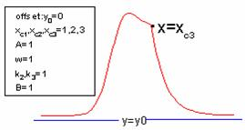

![y=y_0+A[e^{-\frac{(x-x_{c1})^2}{2w}}+B(1-0.5(1-\tanh (k_2(x-x_{c2}))))e^{-0.5k_3(|x-x_{c3}|+(x-x_{c3}))}]](../images/CCE/math-f6cf872a97abded1b2afd66909482127.png "y=y_0+A[e^{-\frac{(x-x_{c1})^2}{2w}}+B(1-0.5(1-\tanh (k_2(x-x_{c2}))))e^{-0.5k_3(|x-x_{c3}|+(x-x_{c3}))}]")
内容 |
クロマトグラフィで使用されるChesler-Cramピーク関数

数：9
パラメータの名前:y0, xc1, A, w, k2, xc2, B, k3, xc3
意味:y0 = オフセット, xc1 = 中心, A = 振幅, w = 半幅, k2 = unknown, xc2 = 中心, B = 振幅, k3=unknown, xc3=中心
下側境界:w > 0.0
上側境界:なし
nlf_cce(x,y0,xc1,A,w,k2,xc2,B,k3,xc3)
FITFUNC\CHESLECR.FDF
Peak Functions, PFW, Chromatography